|
|
| hard corals text index | photo index |
| Phylum Cnidaria > Class Anthozoa > Subclass Zoantharia/Hexacorallia > Order Scleractinia > Family Fungiidae |
| Sunflower
mushroom coral Heliofungia actiniformis Family Fungiidae updated Jan 2020 Where seen? This free-living coral with Udon-like tentacles is only commonly seen on some of our undisturbed Southern shores. They are often seen in shallow silty, sandy areas among seagrasses, sometimes wedged among coral rubble. It used to be commonly seen on Beting Bronok in the north. It is the only species in the genus Heliofungia and is considered among the largest of hard coral polyps. Features: Circular skeleton 10-20cm in diameter with a flat smooth base (not concave). It is also sometimes called plate coral because its disk-shaped skeleton does resemble a dish. This coral is free-living (is not attached to the surface) as an adult and is a solitary polyp. The skeleton is light and the upper surface has long continuous lines radiating from the single slit-shaped mouth in the centre. These lines have large, rounded 'teeth'. The tissue covering the upper surface is usually striped. The tentacles are long, thick and cylindrical (they look like thick 'udon' noodles), usually brown but also bluish and even bright green. Usually with white or cream tips that are sometimes inflated to a bulbous tip. Sometimes mistaken for a sea anemone when its long tentacles obscure the hard skeleton. The hard skeleton immediately identifies it as a hard coral. Here's more on how to tell apart large 'hairy' cnidarians. The Torch coral (Euphyllia glabrescens) has tentacles that look similar to the sunflower mushroom coral. But the torch coral and its tentacles are smaller. When the tentacles are retracted, it resembles Fungia mushroom corals but Sunflower mushroom coral can be distinguished by the large, rounded teeth on the skeleton walls. Status and threats: It is listed as globally Vulnerable by the IUCN which says that although "this species is widespread and locally common throughout its range, it is heavily to harvested for aquarium trade and has suffered extensive reduction of coral reef habitat due to a combination of threats." |
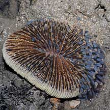 Pulau Semakau, Aug 08 |
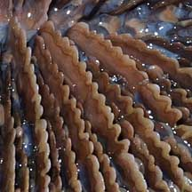 Large, lobed teeth. |
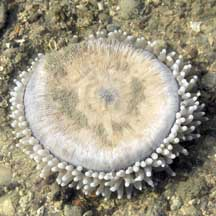 The underside is flat (not concave) Beting Bronok, Jun 03 |
|
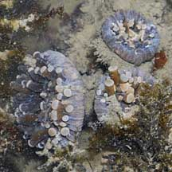 Pulau Semakau, Jan 09 |
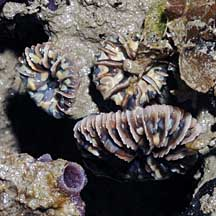 Young ones attached to a hard surface. Pulau Semakau, Aug 08 |
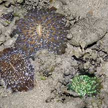 Pulau Hantu, Aug 03 |
|
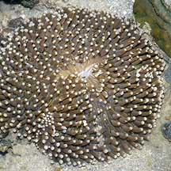 Pulau Hantu, Apr 06 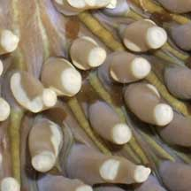 |
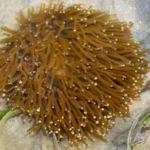 Pulau Semakau, Mar 05 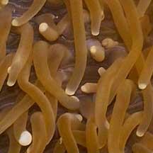 |
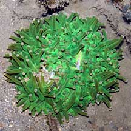 Pulau Semakau, Apr 08 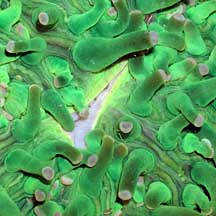 |
| Sunflower mushroom corals on Singapore shores |
On wildsingapore
flickr
|
| Other sightings on Singapore shores |
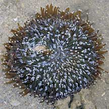 Terumbu Berkas, Jan 10 |
|
Links
References
|